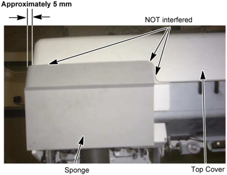
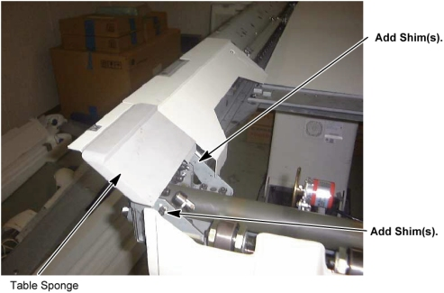
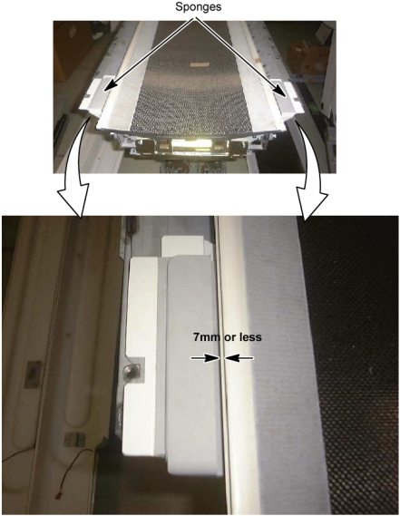

Operating Documentation
Direction 5181166-800, Rev# 7
BrightSpeed Select Service Methods Adv
Operating Documentation |
| Required Persons | Preliminary Reqs | Procedure | Finalization |
|---|---|---|---|
| 1 |
| Last Revised: | 16 March 2007 |
| Item | Qty | Effectivity | Part# | Manufacturer | |
|---|---|---|---|---|---|
| Table Sponge L | 1 | - | 2235886–2 | - | |
| Table Sponge R | 1 | - | 2235885–2 | - | |
| Understand and follow the Safety Guidelines Manual. | |
Move the cradle to the OUT mechanical limit position by hand.
Raise the Table to its highest position.
| NOTE: | If the Table up/down movement is inoperative, use the service power cable to raise the Table (refer to Enforced Table Elevation). |
"Remove power from Table by turning off “120VAC”, “Axial Drive” and “HVDC” switches on the service switch panel."
Remove the following covers and component from the Table:
Cradle (Refer to Cradle)
Top Cover L and R (Refer to Table Covers Removal)
Top Cover Front
| NOTE: | When replacing the Sponge R, remove the Top cover R only. When replacing the Sponge L, remove the Top cover L only. |
Illustration 1: Removing the Cradle and Top Cover

Remove the two screws and Rail Cover Front.
| The table sponge is being installed with any shims to adjust the sponge location. So, when removing the table sponge, write down the numbers of shims set under the sponge mounting bolt(s). | |
Remove the two (or one) bolt(s) and table sponge.
Illustration 2: Table Sponge Removal

Some tables might contain the old type of sponge, which is installed using one screw. In this case, the sponge bracket must be replaced before installing the new sponge which is installed using two screws. Refer to Step (front sponge bracket replacement) described below.
Illustration 3: Table Sponge

Install the new sponge with shims of which number is recorded in previous step. Temporarily tighten the mounting bolts.
Temporarily install the top cover, then verify that:
The sponge is NOT interfered with the top cover.
The distance between the edges of sponge and top cover is approximately 5mm.
Illustration 4: Table Sponge Installation

If the sponge does not meet the specification above, adjust the sponge location using shims (in the sponge FRU kit).
Illustration 5: Table Sponge Positioning

Temporarily place the cradle onto the table, then verify that:
The clearance between cradle and sponge is 7mm or less.
If it is not, remove the cradle and adjust the sponge horizontally by loosening the mounting bolts.
Illustration 6: Table Sponge and Cradle Position

Remove the cradle from the table and tighten the sponge mounting bolts securely.
Install the removed parts in the reverse order of removal.
No finalization required.